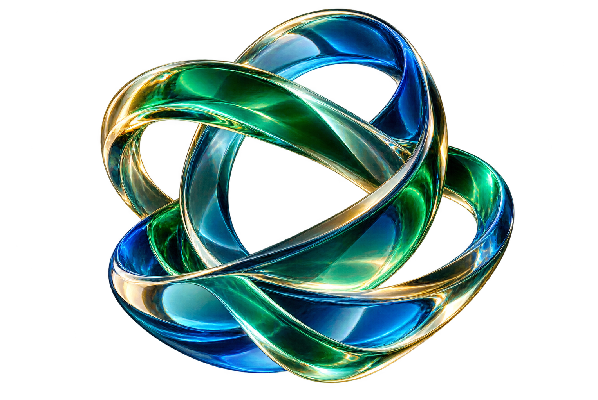

Цифровая экосистема QUN
Творчество.
Общение.
Технологии.
Всё для общения, творчества и совместной работы — в одном месте.

Главное — рядом
Сервисы QUN
Выберите нужный инструмент.
Общение и знания
Создание и технологии
Инструменты и экосистема
↗
QUN Market
Товары, услуги и предложения.
Тестовая сеть↗QUN Wallet
Тестовый кошелёк и цифровые активы.
Демо↗QUN Core Explorer
Интерактивный демо-просмотр блоков и тестовых переводов.
Прототип↗QUN Mini App
Игровые эксперименты и интерактивные миры.
↗QUN VPN
Раздел управления подключением.
↗Экосистема QUN
Все направления и общая структура.
↗Developer Hub
Материалы для участников разработки.
Ничего не найдено. Попробуйте другое название.
Часть сервисов развивается и может работать в тестовом режиме. Их статус указан рядом с названием.